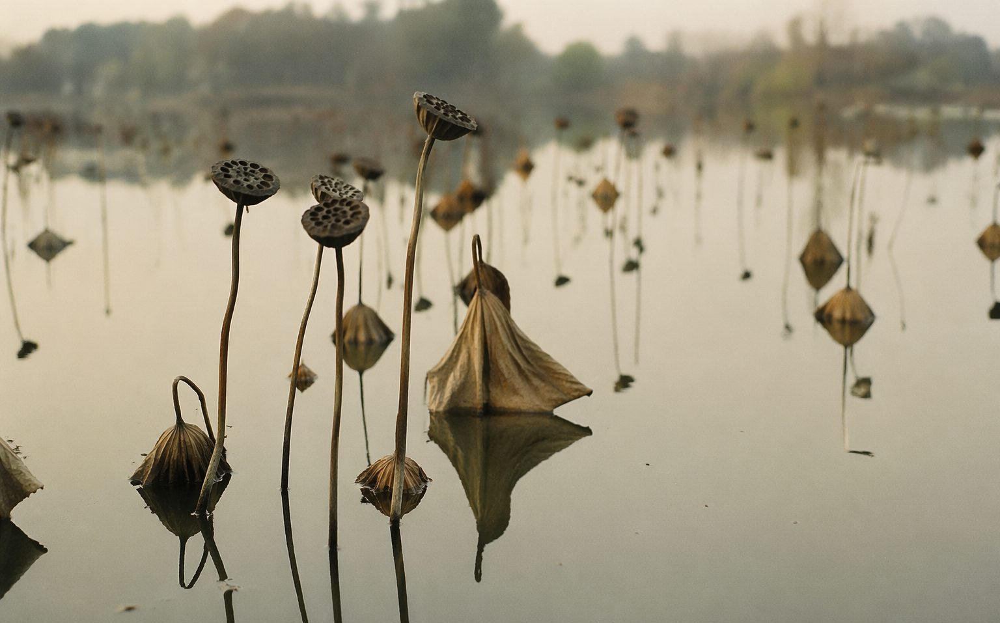

PHOTOS · 摄影
残荷 · 留得残荷听雨声

十月末的清晨，城西的湿地公园几乎没有游人。荷塘过了季节，叶子收拢，茎秆弯折，莲蓬低垂，整片水面像一页写满了删节号的纸。我蹲在栈道边拍了四十分钟，雾慢慢散开，残荷的影子在水里一动不动。
小时候觉得荷要看夏天，「接天莲叶无穷碧」才值得。现在更偏爱残荷：夏天是展示，秋天是坦白。茎该弯的弯，蓬该垂的垂，一点不撑着。拍照这些年，我越来越喜欢拍「退潮之后」的东西——花谢后的枝，人走后的巷，潮退后的滩。
回去的路上翻照片，最满意的是这张：几支莲蓬错落着，倒影把水面钉住。想起李商隐那句「留得残荷听雨声」。那天无雨，但我好像听见了——是快门声，一下，又一下。
完